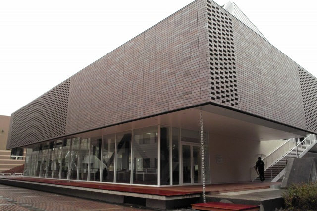
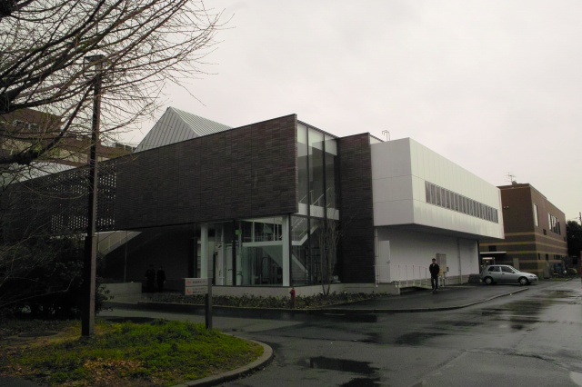
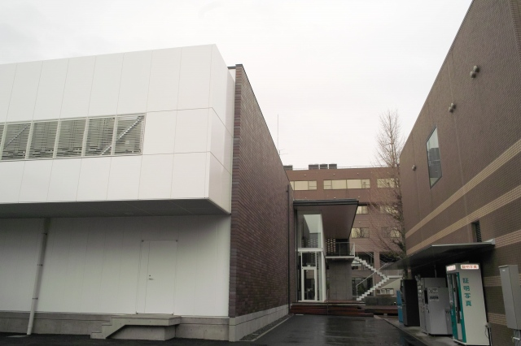
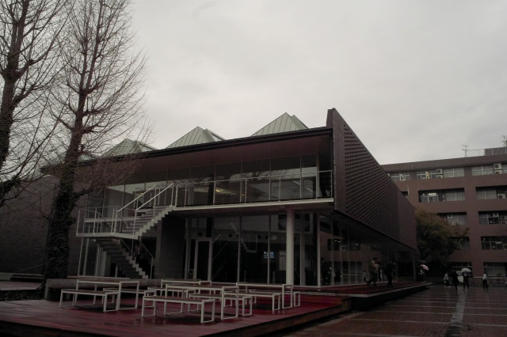
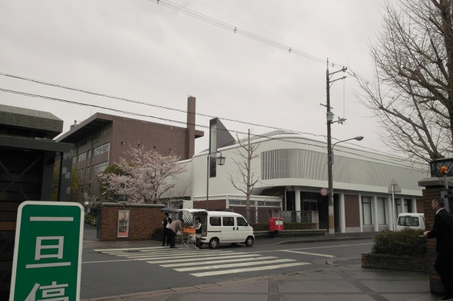
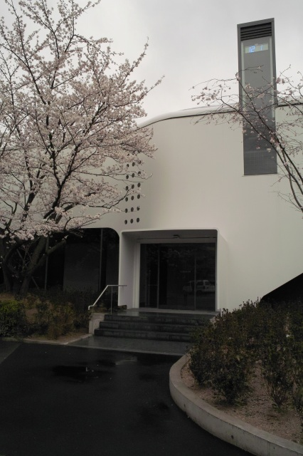
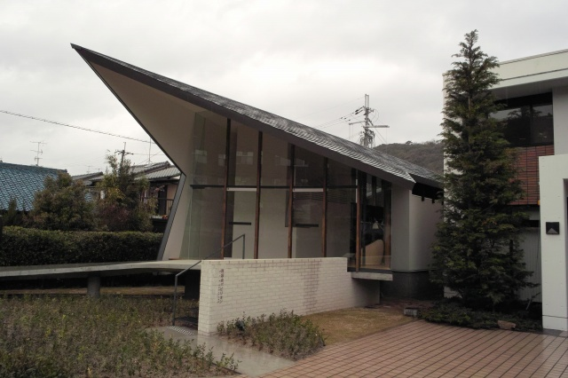
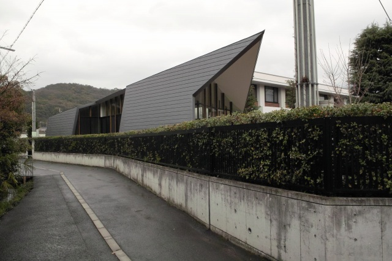
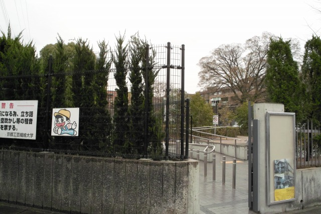
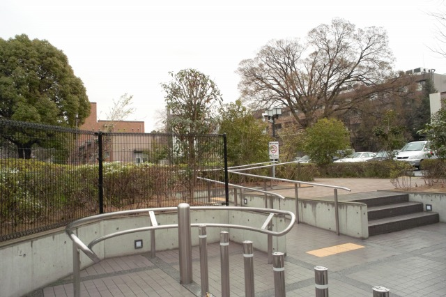

| ・ いろいろと新しく出来ました(H22.04.01) | |||
「KIT HOUSE（学生食堂）」、「６０周年記念館」、「同窓会パビリオン」が新しく出来ました．そして西北門なども． |
|||
|

10号館の出入り口からみた食堂（KIT HOUSE）． |

造形工房から見ると（エレベータがついてます） | ||
|

旧購買から見ると（白い出っ張りには室外機） |

旧本屋から見ると（やっぱりウッドデッキが） | ||
|

６０周年記念館（中央門から） |

突起のところに青LEDの時計が（昼も夜も見えにくい） | ||
|

同窓会パビリオン（工繊会館） |

工繊会館は西キャンパス北側にあるけど馴染みない建屋 | ||
|

当社比2倍に西北門が入りやすくなりました |

キャスタ付きスーツケースをぶつけることもないです | ||